Exit Procedure
Sentrifugo's Exit module will provide your organization a smooth and hassle free exit process. You can create a tailored exit process suitable for your organization. You can customize exit types, notice period, exit request approvers and exit interview questions. Employees can raise an exit request. All the mandatory and configured approvers will be able to provide their approval in an organized manner. Once the Exit Process has been completed, the employee will be enabled to provide his/her feedback through the Exit Interview Questions.
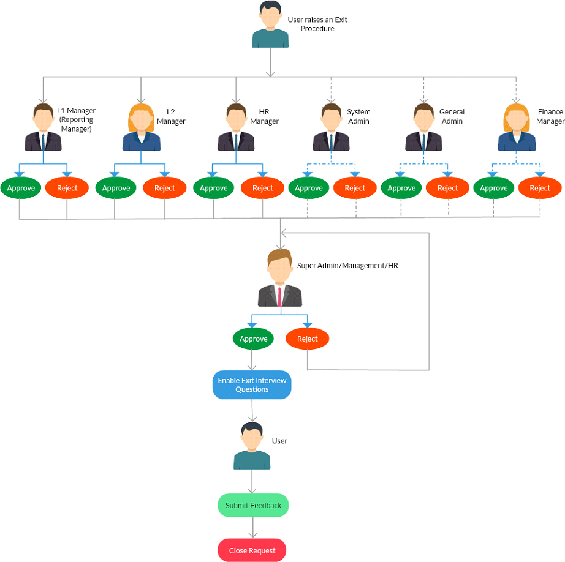
Description
- A User raises an Exit Request.
- The Approvers and the User will receive an email notification.
- The Approvers can approve/reject the request.
- The Final approval will be done by the Super admin/Management/HR.
- After final approval, Exit interview questions will be enabled to the user by the Super Admin/Management/HR.
- User submits the feedback.
- The Exit Procedure will be closed.
How do I configure Exit Types?
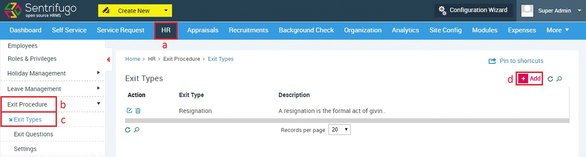
- Click HR in the top menu
- Click Click Save button on the left menu panel
- Click Exit Types in the submenu
- Click +Add button on the right side
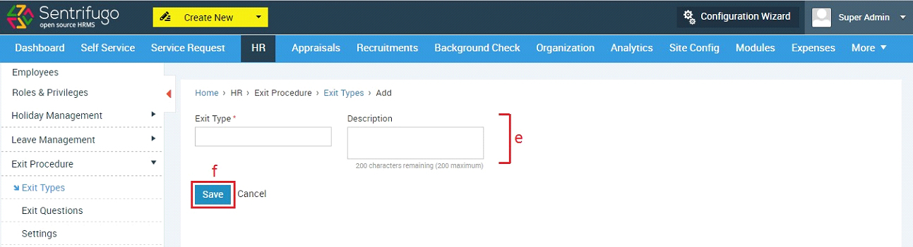
- Enter ‘Exit Type’ name and its description
- Click Save button
How do I configure Exit Questions?
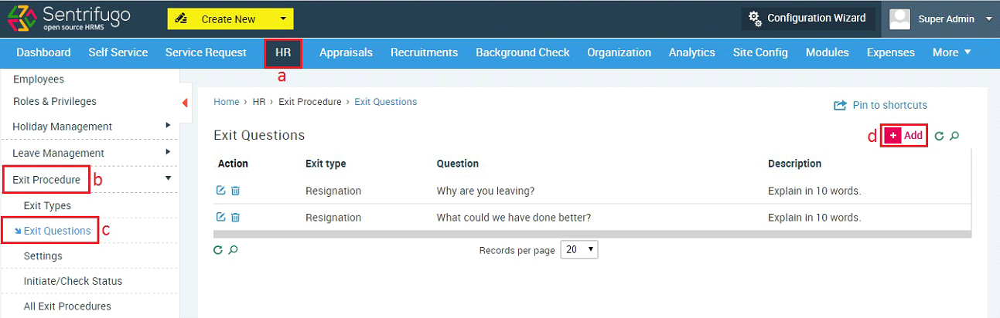
- Click HR in the top menu
- Click Exit Procedure on the left menu panel
- Click Exit Questions in the submenu
- Click +Add button on the right side
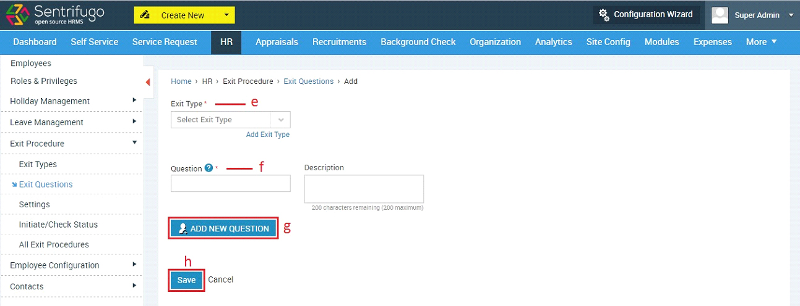
- Select an Exit Type
- Enter a Question
- Click to enter a new question
- Click Save button
How do I configure Settings?
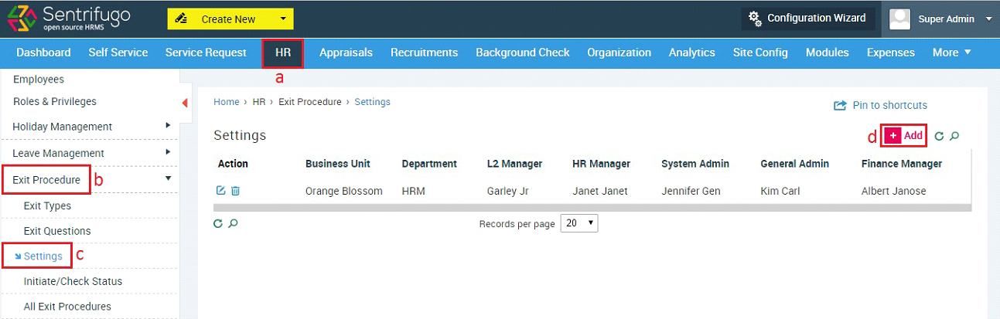
- Click HR in the top menu
- Click Exit Procedure on the left menu panel
- Click Settings in the submenu
- Click +Add button on the right side
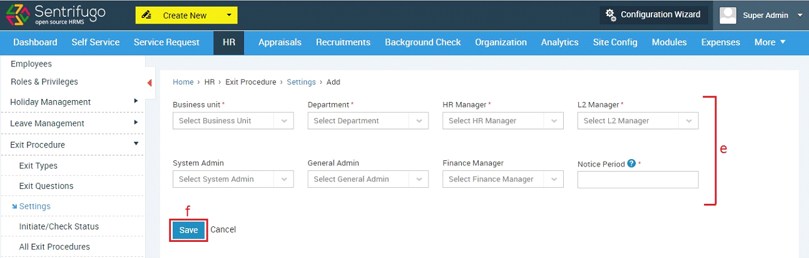
- Enter the required details
- Click Save button

The reporting manager of an employee will be considered as the L1 Manager during the Exit Procedure.
How do I initiate an Exit Procedure?
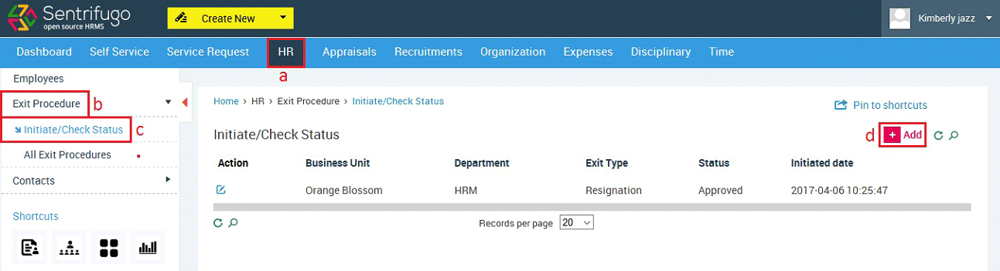
- Click HR in the top menu
- Click Exit Procedure on the left menu panel
- Click Initiate/Check Status in the submenu
- Click +Add button on the right side
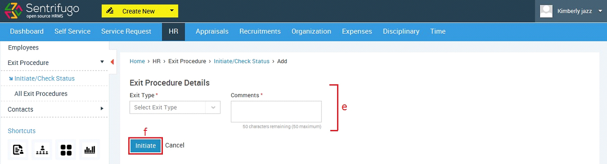
- Enter the required details
- Click Save button
How do I approve an Exit Procedure?
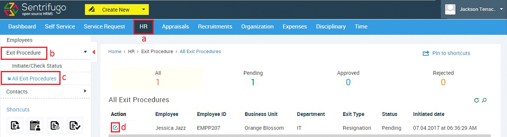
- Click HR in the top menu
- Click Exit Procedure on the left menu panel
- Click All Exit Procedures in the submenu
- Click Edit icon against a record
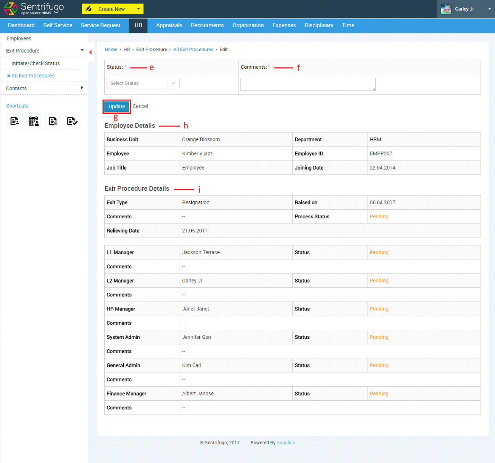
- Select Exit Status
- Enter Comments
- Click Save button
- Details of the employee can be viewed
- Details of the Exit Procedure along with the status of every level of approval can be viewed
The same procedure (18.5) can be followed by all the roles for providing an approval.
How do I provide the final approval for an employee’s Exit Procedure?
The final approval will be given by the Super Admin/Management/HR.
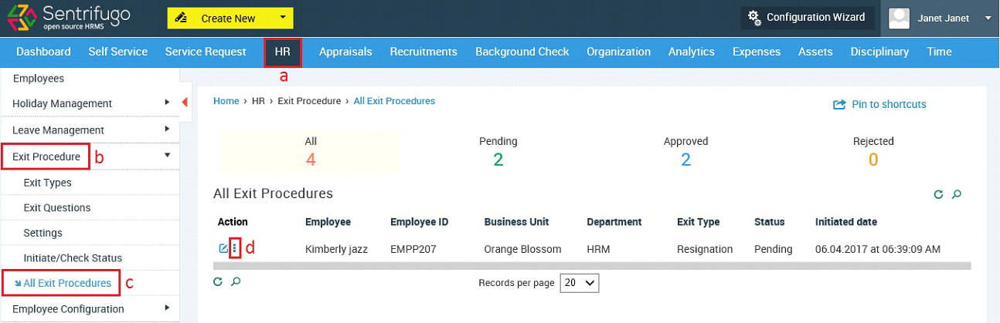
- Click HR in the top menu
- Click Exit Procedure on the left menu panel
- Click All Exit Procedures in the submenu
- Click Edit/More icon against a record
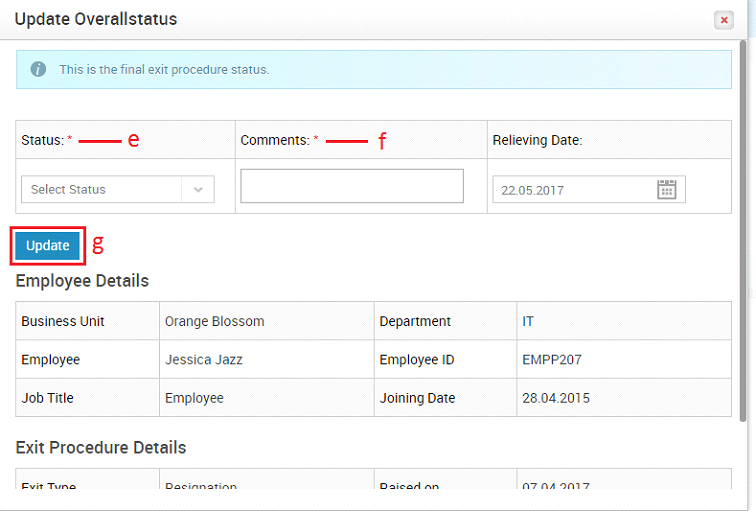
- Select Status
- Enter Comments
- Click Save button
How do I enable Questions for the Exit Interview?

- Click HR in the top menu
- Click Exit Procedure on the left menu panel
- Click All Exit Procedures in the submenu
- Click Questions icon against a record
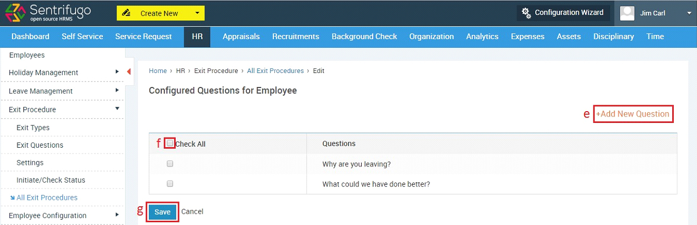
- Click to add new questions
- Check the checkbox to select questions
- Click Save button
How do I answer Questions for the Exit Interview?
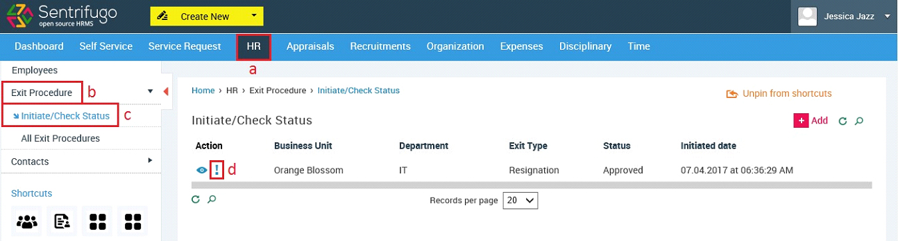
- Click HR in the top menu
- Click Exit Procedure on the left menu panel
- Click All Exit Procedures in the submenu
- Click Questions icon against a record
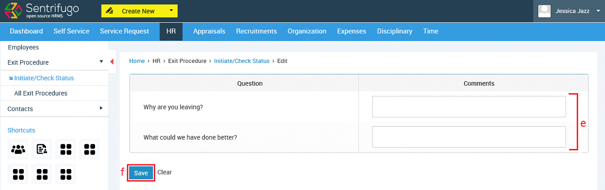
- Enter Comments
- Click Save button
An email notification will be sent to the employee.
How do I view an employee’s Exit Interview feedback?
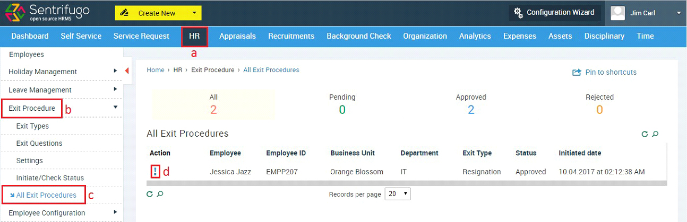
- Click HR in the top menu
- Click Exit Procedure on the left menu panel
- Click All Exit Procedures in the submenu
- Click Questions icon against a record
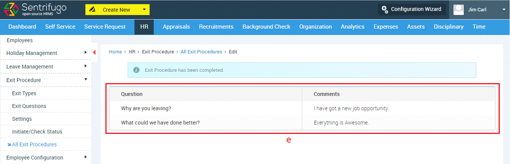
- Feedback of Exit Interview
An employee’s Exit Procedure can be viewed by Super
Admin/Management/HR.